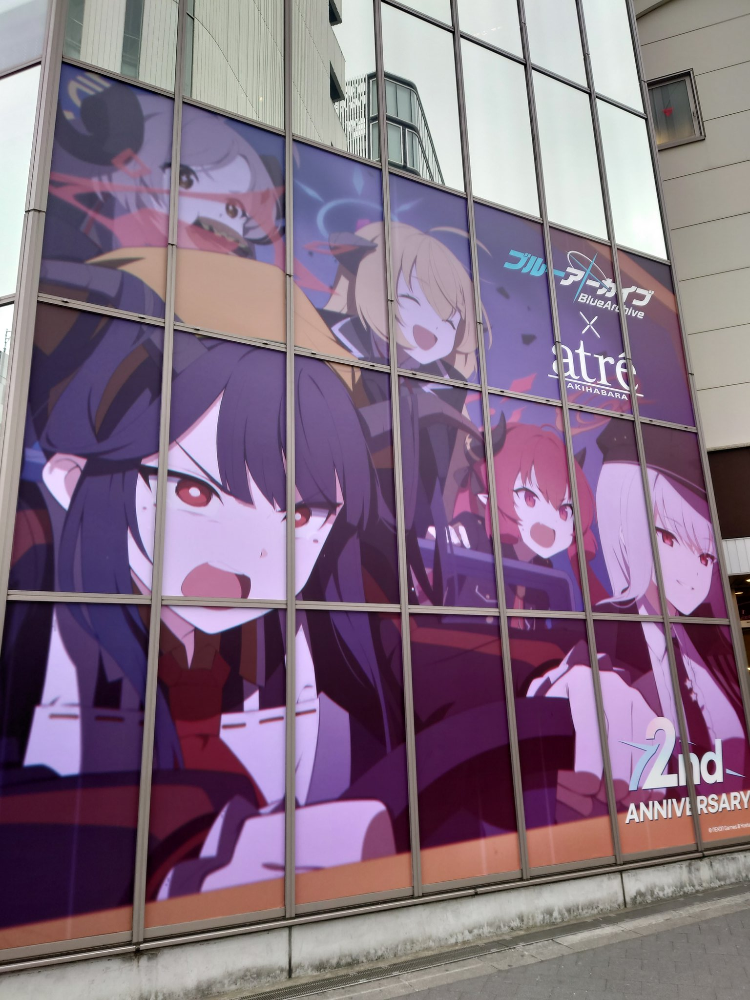

ブルーアーカイブ 暗号仕掛けの挑戦状 秋葉原スタンプラリーを制するのこと
タイトル通り、ブルアカ2周年の秋葉原スタンプラリー制覇してきました。その記録を忘れないうちに記しておきます。
現地の様子とか、atre店内放送、スタンプラリーで見られるモモトーク、本日発売のアンソロのネタバレを含みますので、これから自分の足で行くぞという方はご注意ください。
また、筆者は重度の百合オタクとして頻繁に幻覚を見たり見なかったりします。
発端
昨年の晄輪大祭からフラッとブルアカをはじめ、そこからズブズブと沼に引きずり込まれた筆者（百合オタク）は、それはもう運営の狙い通りに正月イベントでフウハルに心臓を打ち抜かれて、最終章のPVやら2周年のatreコラボやらで発狂して息も絶え絶えになっていました。
そこへ、アキバのスタンプラリーで見られるモモトークの情報が舞い込んできたのだから大変です。
URLが固定なので見ようと思えばすべて見られてしまうのですが、近くの友人と一緒に行けるんではないかという希望的観測のもと、花京院典明のように「やはりアキバか。いつ出発する？私も同行する」と話して、その場のノリで有給休暇を申請1し、整理券の購入2をしすませるという次第でした。
さて、ここからは、秋葉原に到着してからの筆者と、その友人の足取りを時系列順に追ってみることとします。
時系列
| 時間 | 出来事 |
|---|---|
| 12:45 | コトブキヤへ |
| 13:20 | atreの階段へ |
| 13:30 | atre入場 |
| 13:45 | atre退出。スタンプラリー開始 |
| 13:45～16:00 | スタンプラリーのため秋葉原を巡回 |
| 16:00 | 最終ポイント アニメイト秋葉原着 |
| 16:00～17:00 | 飯、その他買い物 |
| 17:00 | 解散 |
コトブキヤ
友人が何やら、武装神姫に関する品揃えを確認してほしいという依頼を受けていたようで、色々と眺めてきました。
机の上の物理スペースはもう殆ど空きがなく、何かを飾るスペースなんてとてもとても、という状況の筆者はただ眺めるだけでしたが、それでも目に楽しい時間でした。
同じ建物でテイルズオブシンフォニアのイベントをやっているようでしたが、時間の都合で深入りはしませんでした。
POP UP SHOP inアトレ秋葉原
今回の最大にして最初の目的はこれでした。
常であれば物理グッズには手を出すまいと固く誓っている筆者でしたが、他ならぬかにビーム先生3の絵であったこと、普段使いしやすいクリアファイルがあったこと、EoDパーカーの異常な存在感4、2周年の発表で脳が情報を処理し切れず理性が彼方へ去っていってしまったことから、まずはこれを目的に秋葉原へとやってきたというわけです。
30分ごとに入場できる整理券が分かれており、友人と筆者は13:30のものを購入していました。

入場口の階段前にこれです。4thPVのワンカットから、クソデカヤケクソフウカ＋美食研。素晴らしい。
入場の10分前に階段に案内され、そこで時間になるまで並んで待機。時間になったら、ショップエリア内の様子を見て2人ずつショップへ通されるという、ソーシャルディスタンスの意識が完全に行き届いた体制になっています。
階段で待っている間にも、店内から専用に撮り下ろされた会話が流れてきました。フウカがいつも通りハルナに”お迎え”されていました。
ハルナからフウカへの感情で、友人と一緒に階段に並んでいた百合オタクは意識の八割方を奪われていました。この時点で、本日の成果としてはもう大金星と言っても過言ではないでしょう。
会話に参加していたのはハルナ、フウカ、アカリの3人でした。ジュンコとイズミはもう買い物しているとだけ語られていたように記憶しています。
この鰐渕アカリって女、フウハルをなんとかしてくっつけようとしてないか？などと、会話の流れや声の調子から勘ぐってしまったのは、百合オタク特有の幻覚がなせる業であったのかどうか、執筆時点からつい数時間前の経験であるにも関わらずすでに記憶が曖昧になっております。
いや、もしかしたらアカハルフウのトライアングルだったかもしれません。
本来予定していた購入物はクリアファイルのみでしたが、ステッカーほしいだろという悪魔の囁き、イベント特有の熱気に当てられ、美食研＋フウカの分のアクスタを揃えてしまいました。
イベントの熱気で正気を失って買い物が増える現象には覚えがあります。同人即売会ですね。サンアカなりブルマなりに出向いてしまっていたらこんなものでは済まなかったでしょう。後の自分に「物理の買い物は控えろってあれだけ言っただろ」って怒られるやつです。
買ってしまった以上、机の上を片付ける良い機会だと思うしかありません。少女軌道のリユニオンのアクスタも立ててるんだよね……。
全員分を1つずつ手に取ったつもりが、イズミだけ2人ついてきて「へへ、このいやしんぼめ」と心の中で罵りながら店員さんに謝りました。商品確認のときに一人ずつキャラ名呼んでくれるの、地味かもしれないけど嬉しいポイントですね。
クリアファイルもう1枚買っておけばステッカー+1枚でしたが、これも後続の方に行き渡るのだと考えれば悪い選択ではないでしょう。
あまり長居して後続の方を詰まらせるのもアレだったので、クリアファイルとアクスタのみを購入してそそくさと撤収。一度出ると再入場はできませんが、この後のハードスケジュールを考えるとのんびりもしていられません。
ひとまず、ポップを撮影して次へ。
なんだこの美脚。美脚研究会か？
スタンプラリー
秋葉原にある16のポイントを巡回してデジタルスタンプ5を集め、アニメイト秋葉原で景品を獲得しよう、というもの。
各地のポップの配置や、スタンプ獲得の際に見られるモモトークを目当てに行こうぜと話して、友人に道案内をしてもらいました。
すべて回って、およそ2時間～2時間半の道のりでした。
筆者よりもよほど秋葉原に明るい友人であったため、その力なしにはここまでスムーズに回れなかっただろうと思います。
モモトーク目当てに行きはしたのですが、現地ではとにかく「邪魔になるまい」という意識が働き、QRコードだけさっと読み取ってその場を去るようにしていました。可能であればポップの写真も撮りましたが、写真に慣れていないせいで色々ひどい6ので、記事に載せられる写真は少なめです。
モモトークはURL固定であることがわかっていたので、ブクマだけして後で読むことに。
1 ギフトショップ The Akiba 9 あみあみ 秋葉原ラジオ会館店 11 イエローサブマリン 秋葉原本店★ミント
まずはアトレの出口から近いこの3箇所へ。
イロハだけツイートしましたが、これを16箇所全部についてツイートするのはいかがなものかと考えて、一旦やめにしています。
ギフトショップ The Akibaのイロハは店頭にポップが出ているので、さっと獲得可能。
あみあみのヒフアズとイエサブのカエデはラジオ会館の4F,6Fに入っていく必要があり、やや狭めの通路なのでさっと獲得したいところです。
ヒフアズ等、同じ場所に複数のポップが立っているところにはそれぞれにQRコードが書かれていますが、どちらも同じものなのでどちらかだけを読み取ればスタンプ獲得はOK。
15 書泉ブックタワー
線路の東側にある3箇所へ向かうため、まずは一番近い書泉へ。
8Fまで上がると、メグのポップがあります。ここ温泉じゃなくて書泉！！
ここもさほど広くないので、さっと獲得しておきたいですね。
ブルアカのアートワークスや、本日発売のアンソロ、以前に発売されているバニー姿のC&Cが表紙のアンソロも積まれていました。
友人はここで3冊購入。筆者はバニー以外電子で購入済みで、バニーもまあ電子があればそれで良いだろうということで見送りました。
本日発売のアンソロは、フウハルやらゲヘナ生がかなり推されていてオススメです。
東方の頃も推していたきびさんの漫画をブルアカでも読めるのが特に嬉しかったことですね。
4 アクティブAKIBA バッティングセンター
1Fがゴルフ、2Fがバッティングセンターになっています。
2Fに上がるとヒビキのポップがあります。こちらもやや狭めなので、さっとQRコードを読み取ってしまいたいところ。
12 タリーズコーヒー アトレ秋葉原店
こちらもアトレではあるのですが、POP UP SHOPが開催されているアトレ1ではなく、アトレ2のほうです。
店頭にカンナのポップがあり、入店せずにスタンプが獲得できるのは優しいですね。
10 三省堂アトレ秋葉原1
こちらはアトレ1。POP UP SHOPからそのまま向かったほうが効率は良かったかもしれません。
書店らしくウイのポップがあります。
8 Cure Maid Cafe & ジーストア・アキバ
そのまま西へ向かい、オノデンに入って4Fへ。アカネのポップがあります。
2 カラオケパセラ 秋葉原電気街店
受付カウンターの前を通り過ぎて奥へ行くとナツのポップがあります。
カラオケ自体を利用する必要はありませんが、受付の前を素通りするのはちょっと申し訳ない感じがします。
14 メロンブックス
なるべく物理で本は買わないようにしていますが、せっかくアキバに出てきたし、どうせ物理グッズも買ってしまうだろうと思っていたので、今日店頭で見つけたら買おうと思っていた本がありました。
女女合同7ですが、残念ながら見つけることはできませんでした。
代わりに比翼連理8を見つけて購入。じっくり楽しみます。
ちなみに、未成年にとってはここのポップが一番難易度が高いです。コハルのポップのすぐ奥にはもう成年向けで肌色だらけ、そもそもメロブの入口前の階段も、局部は隠されているとは言え凄まじい肌色率です。
キャラ付けとしてここにコハル置いたらおいしいのはわかるけど、わかるけどさあ……！
16 野郎ラーメン 秋葉原総本店
昼頃から歩き通しで、そろそろ腹も減ってきたことだし、入れるかどうか見てみようか、ということで柴関ラーメンと化した野郎ラーメンへ。
道路の反対側までとんでもない列ができており、入店は即座に諦めました。店内放送とかも気になりはするけど、ここまで並ぶのは現実的ではありません。
幸い、ポップは店頭にあるので、スタンプ獲得だけなら並ぶ必要はありません。
7 シューティングレンジ ターゲットワン 秋葉原店
マップ上の西の端、他の店から大きく離れたところにあります。
電気街のオタクそのものの賑わいから離れてひっそりとしており、地下に入らないと到達できないため、難易度高めです。
階段を降りるとすぐにポップが見えるのは優しさでしょう。
6 GUN＆MILITARY ECHIGOYA 秋葉原店
こちらもマップ上でかなり北西の僻地です。このままアーツ千代田のRABBIT小隊の展示を見に行くルートもありそうですね。
ヒナ同様に、こちらも目立たないビルの2Fまで入る必要があり、難易度高めでした。
店内に陳列された銃の並びは壮観です。ズラッと並んだ銃を品定めするような位置にサオリのポップが立っています。
13 ドン・キホーテ 秋葉原店
残り3箇所は固まっています。ドンキの上のフロアまで上がるとアル社長のポップがあります。
3 タイトーステーション 秋葉原店
間にアニメイトがありますが、アニメイトはスタンプコンプリート時の報酬獲得のために訪れるので、先にこちらに来ておきます。
店内がかなり狭く、上りはエスカレーターがありますが、下りはエレベーターか階段を使う必要があります。
ミドリが立っているところは比較的スペースに余裕がありますが、1Fが特に狭いです。
5 アニメイト秋葉原
最終ポイントです。入ってすぐにノアユウが立っています。
スタンプをコンプリートしたら、レジで報酬判定用のQRコードを読み込むことで記念クリアファイルをもらうことができます。
飯、その他買い物
友人は中華推しでしたが、うまそうなカレー屋を複数見てカレー腹になってしまったので、ゴーゴーカレーにしました。
遅めの昼食を摂り終え、ビックカメラで友人はUSBハブを、筆者は前からほしかったHDMI分配器を購入。
そのまま解散しました。
本日の戦利品
全体的に写真が下手くそで申し訳ない限りです。
少女軌道のリユニオンのときにも感じたことですが、アクスタの良さを実感しています。
推しカプに卓上で並んでてもらえるということはですね、仕事中もちょっと視線を動かすだけで尊みによって癒されることが可能なわけですよ。
えっ、誘拐してまでお買い物デートしたかったハルナと、誘拐されたけどなんだかんだお買い物デート楽しんじゃうフウカ……？
どうしよう。常に狂える環境を手にしてしまったのでは？
終わりに
急遽予定を入れたにも関わらず、複雑怪奇な秋葉原の道のりを先導してくれた友人に深く感謝します。
一つリミッターが外れてしまったような気もしますが、今後も物理のものはできるだけ控えていきます……！
さて、これからモモトークをキメます。
- これが許される職場で本当に良かった。
- 2/6(日)までは、atreコラボはLivePocketで整理券を購入しないと入場すらできない。システム上購入と呼んでいるだけで、無料ではあるが。
- 筆者が絵を描く真似事をするきっかけになった先生でもある。
- マグカップ、パーカー、パスケースはもう昨日の時点で終了し、通販分を残すのみとなってしまったが。
- 各店舗に立っているキャラ立ち絵のポップにQRコードが書かれている。それを読み取るとスタンプ獲得URLに飛ぶ。
- 後ろ姿とは言え、通りすがりの人が写り込んでしまったりなど。
- Gunsight Link -ブルアカ女女合同-のこと。R18作品のため、リンクはしていない。ググる際は注意。女性同士の関係性という意味での百合本で、めちゃくちゃ気になっているが合同誌なので電子版は難しそう。
- 白玉もち先生のヒフアズ本。こちらもR18。だいたいこの人のモモミド絵のおかげでブルアカの沼に沈んだので、足を向けて寝られない。